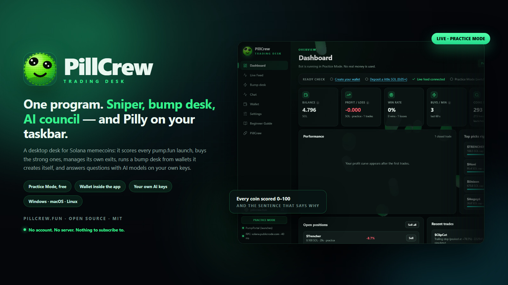
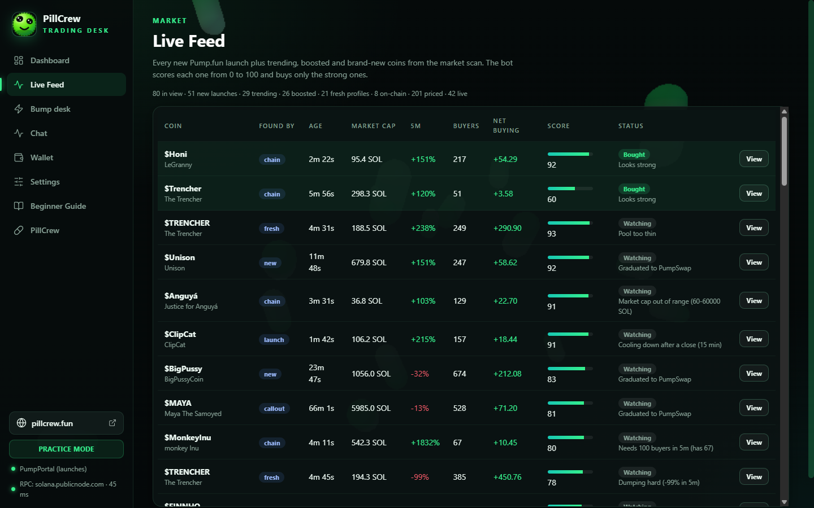
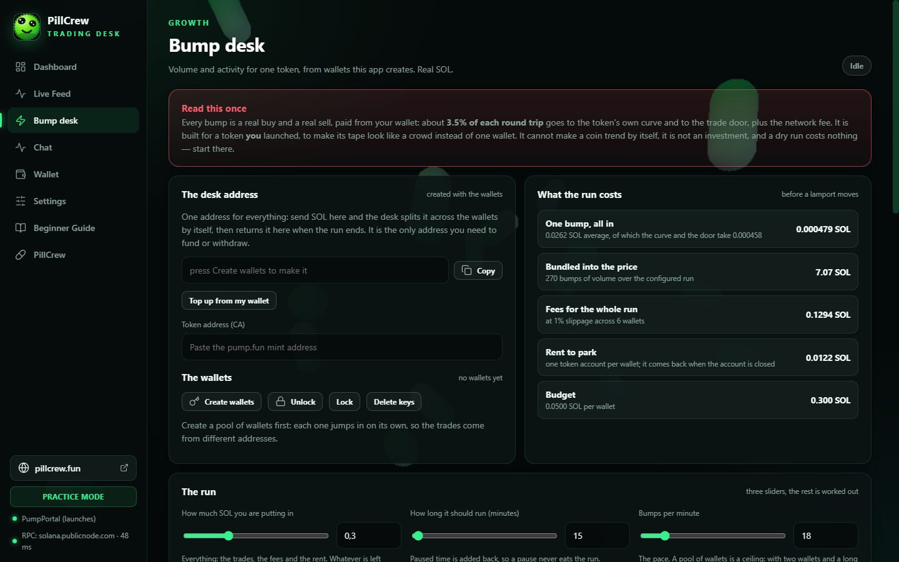
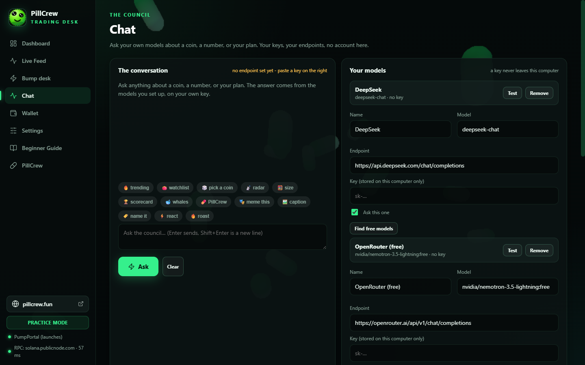
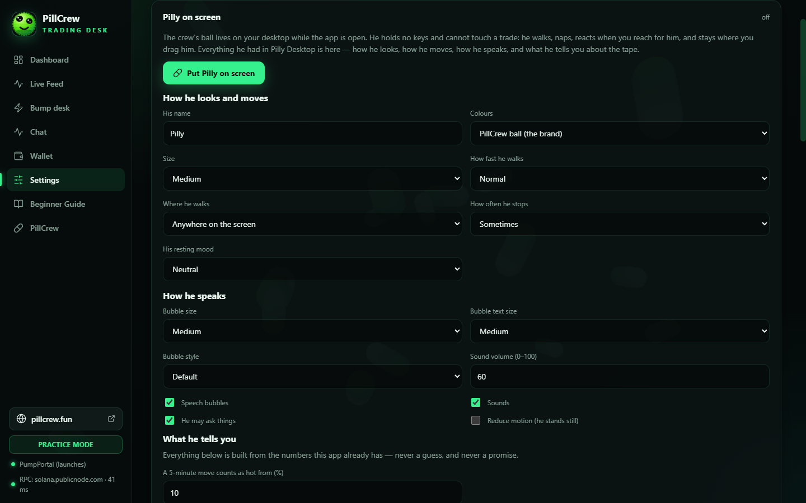
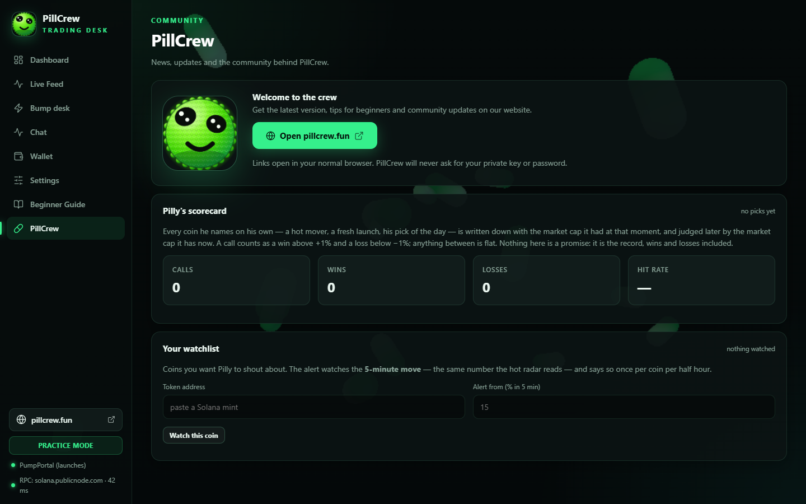
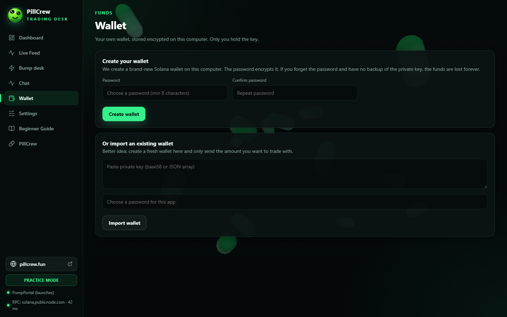
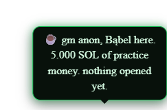

One program now. Pilly and the sniper are the same app.
For a while there were two PillCrew installers on your PC: Pilly Desktop, the little green pill with the free-AI chat, and PillCrew Sniper, the trading desk. Two windows, two settings files, two wallets' worth of confusion. That is over — they are now one program called PillCrew, and it does all of it in a single window on Windows, macOS and Linux.
One installer. One profile. Your old Sniper profile is copied across on the first boot — nothing is deleted, nothing has to be set up again.

What this update is
1. Everything Pilly had, inside the desk
The whole mascot panel came across — he is not a sticker. His name, his colours, his size, how fast he walks, where he walks (across the screen or along the taskbar line), how often he stops, his resting mood, speech bubbles with their size, text size and six styles, his voice and its volume, reduce motion, and six switches that decide what he is allowed to tell you: hot movers, fresh launches, the morning brief, his pick of the day, whale alerts, and his mood, which follows your PnL.
He walks without leaving the screen, turns around short of the corner instead of parking himself in it, and stays exactly where you drag him. Everything he says is built from numbers the app already has — he is not allowed to invent one.
2. The chat has its own window, chips and keys
Thirteen quick actions — trending, watchlist, pick a coin, radar, size, scorecard, whales, PillCrew, and the five meme jobs — and every one of them assembles the app's own numbers in the main process before the question goes out, so a model can never be told what a price is by the page. Paste a DeepSeek or OpenRouter key and press Find free models: the panel asks the provider what it actually offers today and picks the best free one, because models come and go and a hard-coded name is how a chat starts answering "HTTP 404".
3. And the things that were simply broken are fixed
- The chat repeated itself. With one model, the read and the only answer were the same sentence printed twice. The per-model list is now drawn only when there is more than one voice, or when a voice failed.
- Saving the look of the chat did nothing. A helper the save path needs existed only inside the window constructor, so the save threw before it wrote anything — the bubble style and the text size were never stored. It now lives where both the first boot and every save can reach it.
- Pilly's hop was drawn outside his own window (his hat sits 13 px below the top of a 64 px window and the hop asked for 18), and his walk went flush to the edge of the screen. Both are capped and measured now.
- The scorecard's four numbers stacked in one column because the grid class it asked for did not exist, and two chat colours asked for variables this theme does not define. Both fixed, and the pictures on this page are the proof.
The program, in pictures
Real market data, Practice Mode, the shipped build — not a mock-up.






A post you can copy
Everything below is the original article, kept as it went out — the animated GIFs of Pilly still live in it, and the screenshots of the desk are the ones taken then.
One app: the sniper, the tape, the council — and Pilly.
PillCrew is a Solana memecoin desk that runs on your computer — Windows, macOS or Linux — and does four jobs in one window: it watches new Pump.fun coins and trades the ones that pass your gate, it makes a tape on a coin you launched from wallets it owns, it lets you ask your own AI models what they think before you press anything, and it keeps the crew's ball on your desktop while it works.
No account here. No subscription. No server of ours in the middle of your money. Your keys stay on your disk.
Read this once. A volume desk is a tape, not a trend. Every bump is a real buy and a real sell, paid from your wallet; about 3.5% of each round trip goes to the coin's own curve and to the trade door, plus the network fee. It is built for a token you launched, to make its tape look like a crowd instead of one wallet. It cannot make a coin trend by itself, it is not an investment, and a dry run costs nothing — start there.
1. The sniper
A new coin is a decision made about two seconds after it exists. The gate is a list of numbers you set — buyers, net flow, market cap, liquidity, holder count, the age of the token — and a coin that does not clear all of them is never bought:
- One entry, one plan. Every position gets a take-profit, a stop, a maximum hold, and a break-even rule. The plan is printed before the buy, not after the loss.
- Fees are part of the gate. The round trip has a floor: if the take-profit cannot pay the curve, the door and the network and still leave something, the app refuses the trade instead of quietly trading at a loss.
- Practice first. Paper mode is the same engine with a simulated order book: the same gate, the same exits, no money. It is the default, and it is where a new install should live for a while.
- It sells everything, always. Stop, sell-all, and a withdrawal that closes the emptied token accounts so their rent comes back.
2. The tape: a desk that owns its wallets
The bump desk is the part most bots get wrong, so here is exactly how it works.
One address, its own keys
You send SOL to one address. The desk splits it across the wallets it generated, trades from them, and brings every lamport home when the run ends. The keys are generated on your machine and sealed with your wallet password (scrypt + AES-256-GCM) — there is no channel in the app that exports one.
A round: N buys, then one sell of the whole bag
A wallet buys N times (1–10, or a fresh random count every round), holds the bag for a randomised band, then sells the whole bag in one transaction and starts again. One buy and one sell is the default — a 50/50 tape. Three buys and one sell is a 75% buy tape. The buy share is not a knob that fights the round; it is what the round produces.
A round has to fit in one wallet's share. A wallet parks its rent, buys its tickets, and only then sells — so the desk prices the whole round against a single wallet before the run starts, refuses the combination if it does not fit, and names the count that does: “4 buys a round need 0.0047 SOL in one wallet, and each of the 3 gets 0.0039. Set “Buys in one round” to 2.” A wallet that runs short mid-round closes the round now and sells what it holds, instead of buying until it is dry.
It finishes the job
- Every wallet's bag is sold on the way out — and the chain says what each wallet holds, so a trade that landed late is found and sold too, not left behind.
- The rent comes back. An emptied token account holds ~0.00204 SOL; the desk closes it instead of abandoning it.
- The money goes home to your wallet — not just to the desk address — in the same press that stops the run.
- Rescue, per wallet. Any row can be sold and reclaimed on its own when something jams; it is the manual version of what the desk does by itself.

Jito, honestly
Each trade is offered to Jito's block engine as a bundle first — one wallet's trade plus its own tip — and if the bundle does not land, the identical bytes go out through the normal route. One signature can execute at most once, so the second path can never trade twice, and the tip is only ever paid by a bundle that actually lands. A bundle is a first try at a better slot, never the wire the trade hangs on.
3. The council: your models, your keys
The chat is not a wrapper around our account — we do not have one. A “tier” is a URL, a key and a model name, so the same panel serves DeepSeek, OpenRouter's free lane, a local Ollama, or any OpenAI-compatible endpoint you point it at. Three rows ship with the app and none of them carries a key.
The worst answer decides. Every usable tier is asked in parallel: one VETO from any model refuses the coin, the first real answer is the read, and a model that fails or times out is reported as failed — silence is never consent. The keys stay on your disk, are never in a share code, never in the log, and are never printed back at you.
4. Pilly on screen
The ball from the site lives on your desktop while the app is open. It is a window of its own — transparent, always on top, skipped in the taskbar, never stealing focus — and it walks, turns at the edge of the screen, naps, reacts when you reach for it, and stays exactly where you drag it, next time too.
Every dial Pilly ever had is in Settings. His name, his colours, his size (¾, 1×, 1.2× — the window is resized with him), how fast he walks, where he walks (across the screen, or along the taskbar line), how often he stops, his resting mood, whether he talks in bubbles and how big they are, how big the letters are, one of six bubble styles, his voice and its volume, whether he may ask things, and a reduce-motion switch that keeps him still. Saving applies the change to the window that is already walking: a new size moves him at once, a new speed is felt in the next tick. Off until you switch him on.
He also has something to say. A bubble of his own — never off the screen, its tail always pointing at him — carries four things, each one a switch: the hot-coin radar (the hottest 5-minute mover in the app's own list, once per coin per half hour, and never a $3K dust coin), a fresh-launch watch, the morning brief (SOL on hand, what the session did), and whale alerts when a wallet you follow opens. His pick of the day comes from the council, and his mood follows your PnL. Every number in every sentence is one the app already has — he never invents one, and he never touches a trade.

5. What it never does
| Never | Why it matters |
|---|---|
| Ship an API key or a wallet | The council runs on your keys, the wallet is yours, and there is no account of ours anywhere in the path. |
| Invent a number | Every figure on screen comes from a transaction that was sent and confirmed, or from the cost model printed before the run. |
| Promise a trend | Volume is one input among many. A coin with no buyers stays a coin with no buyers, and the app says so. |
| Leave a bag behind silently | Bags are sold on the way out, the rent is reclaimed, and a wallet that cannot trade is named instead of quietly dropping out. |
| Call a sent transaction a paid one | A signature means the bytes were accepted. The app waits for the chain, and reports what the chain says. |
6. Install and start
- Download the installer for your system (Windows .exe, macOS .dmg, Linux .AppImage).
- Open it, set a wallet password, and press Practice mode. Nothing is real yet.
- Paste your own RPC endpoint and, if you want the chat, one AI key.
- When the practice run behaves the way you want, switch to real money, put a small budget in, and read the cost model before pressing Start.
Windows shows a SmartScreen warning because the build is not code-signed yet: “More info” → “Run anyway”. Every line of the app is ordinary Node.js/Electron, and the installers are built from the same source you can read.
7. The numbers the app owns
| Dial | Default | What it means |
|---|---|---|
| Ticket | worked out | Derived from the budget, the length and the pace — the only order in which a small budget is not a slow accident. |
| Buys in one round | 1 | Then one sell of the whole bag; 1–10, or a random count every round. |
| Minimum ticket | 0.0005 SOL | Below it the fixed costs are a bigger share of the trade than the curve's own fee. |
| Token-account rent | 0.00204 SOL | Parked per wallet, returned when the account is closed. |
| Jito tip | 0.00001 SOL | Paid by the trading wallet, only when the bundle lands. |
| Round-trip cost | ~3.5% | The coin's curve and the trade door, both ways, plus the network fee. |
8. A post you can copy
Screenshots in this article were taken from a clean install: no keys, no wallet, no positions. Nothing in them is staged.